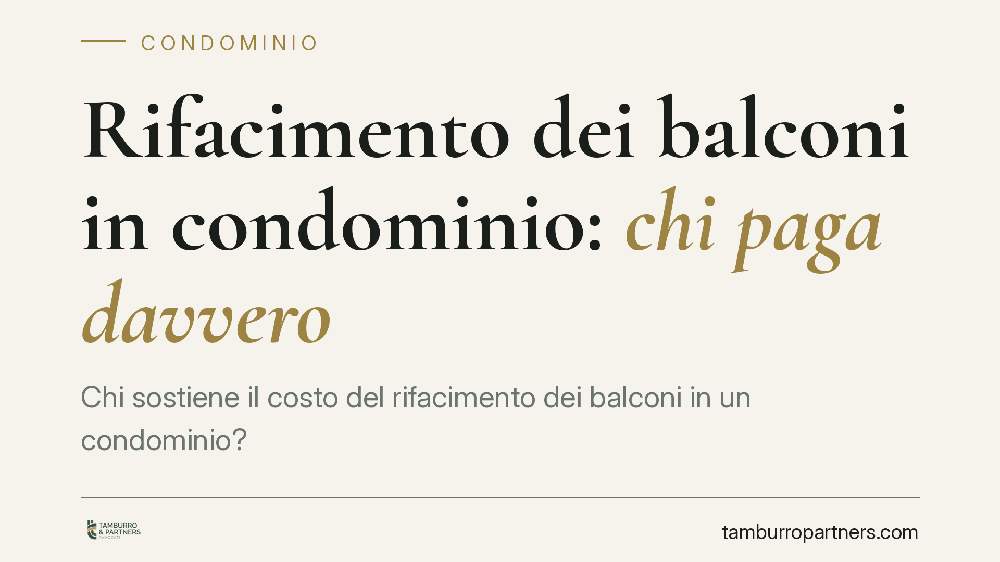

Rifacimento dei balconi in condominio: chi paga davvero
Chi sostiene il costo del rifacimento dei balconi in un condominio? La risposta dipende dalla natura di ciascun elemento: la struttura aggettante è privata, ma alcune parti con funzione estetica ricadono sul condominio. La distinzione conta, perché una delibera assembleare sbagliata può essere nulla e i costi accessori vanno ripartiti con criterio.

Il fatto
Il rifacimento dei balconi è tra le voci di spesa che generano più contenzioso condominiale. Il motivo è semplice: il balcone non è un bene omogeneo. Alcune sue parti appartengono al singolo proprietario, altre svolgono una funzione estetica per l'intero edificio. Confondere i due piani porta a delibere illegittime e a riparti di spesa contestabili.
Una recente pronuncia del Tribunale di Cagliari, in linea con l'orientamento della Cassazione, ha ribadito i confini della materia. Ne ricaviamo criteri applicabili a qualsiasi condominio.
Inquadramento normativo
Occorre distinguere i balconi aggettanti dai balconi incassati. Il balcone aggettante è quello che sporge dalla facciata, come un prolungamento del solaio dell'appartamento. Secondo la giurisprudenza consolidata, esso non è bene comune ai sensi dell'art. 1117 del Codice civile: struttura portante, soletta e pavimento servono in via esclusiva l'unità immobiliare cui accede. Le relative spese gravano quindi sul singolo proprietario.
La deroga riguarda gli elementi con funzione estetica e decorativa: rivestimenti esterni, frontalini (la fascia che chiude il bordo del balcone), fregi, cornici e parapetti quando concorrono al decoro architettonico della facciata. Questi elementi, contribuendo all'aspetto complessivo dell'edificio, sono considerati condominiali e le spese si ripartiscono tra tutti i condomini secondo i millesimi di proprietà.
Da qui il punto critico. L'assemblea può deliberare validamente solo su ciò che è comune. Se delibera lavori su beni di proprietà esclusiva – la soletta o il pavimento del singolo balcone – la delibera è nulla ai sensi dell'art. 1418 del Codice civile, perché eccede i poteri dell'organo collegiale e incide su diritti soggettivi individuali. La nullità è rilevabile in ogni tempo e non è sanata dalla mancata impugnazione.
Implicazioni pratiche
Per il singolo proprietario significa che non tutto ciò che l'amministratore addebita è dovuto allo stesso titolo. Le spese vanno lette per componente: quelle strutturali del proprio balcone restano a suo carico, quelle estetiche condominiali si dividono in millesimi.
Un nodo frequente riguarda i ponteggi. Quando i lavori interessano contemporaneamente parti private (le solette dei balconi) e parti comuni (facciata, frontalini), il costo dell'impianto di ponteggio non può essere attribuito interamente al condominio né interamente ai singoli. Va scorporato in base all'incidenza effettiva dei lavori privati e di quelli comuni. Un riparto forfettario o generalizzato è contestabile.
Per l'amministratore, la conseguenza operativa è netta: prima di portare in assemblea un intervento sui balconi occorre qualificare ogni voce. Una perizia del direttore lavori che distingua le lavorazioni per natura – strutturale privata, estetica comune, opere accessorie – riduce drasticamente il rischio di impugnazioni e di delibere nulle.
Attenzione anche al bonus fiscale eventualmente collegato: la ripartizione delle detrazioni segue la titolarità della spesa, non l'importo complessivo del cantiere. Un riparto errato a monte si trascina sulla documentazione fiscale.
Cosa fare in concreto
- Qualificate ogni componente prima della delibera. Chiedete al direttore lavori un computo che separi le lavorazioni strutturali private dagli elementi estetici comuni.
- Verificate i limiti dell'assemblea. Non fate deliberare interventi su solette e pavimenti dei singoli balconi: rientrano nella sfera del proprietario e una delibera in tal senso è nulla.
- Scorporate i costi dei ponteggi. Ripartite l'impianto in proporzione all'incidenza effettiva dei lavori privati e di quelli su parti comuni, con evidenza in verbale.
- Documentate il criterio di riparto. Allegate al verbale il computo metrico distinto: è la prima difesa in caso di contestazione.
- Coordinate ripartizione e detrazioni fiscali. Attribuite le spese al soggetto realmente onerato, così da rendere coerente la documentazione per i bonus.
Consigliamo, in presenza di interventi complessi che coinvolgono contemporaneamente parti private e comuni, una verifica preventiva sia della delibera sia del piano di riparto, prima dell'avvio del cantiere.
Disclaimer
Contributo informativo a cura di Tamburro & Partners - Avv. Giuseppe Tamburro. Non costituisce parere legale.
Ogni condominio ha una storia a sé.
Se gestisci un'amministrazione e vuoi un confronto su una specifica questione condominiale, scrivi allo studio. Ti rispondiamo entro un giorno lavorativo.